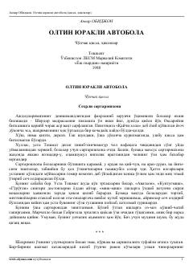

OYAnvar Obidjonning qiziqarli qissa va hikoyalar to'plami.
Ushbu kitob taniqli o'zbek yozuvchisi Anvar Obidjonning qissa va hikoyalarini o'z ichiga oladi. Unda qiziqarli voqealar, bolalik olami va turli hayotiy sahnalar mahorat bilan tasvirlangan. Asar o'quvchini ezgulikka va mehr-oqibatga chorlaydi.